Instalaciones de la granja


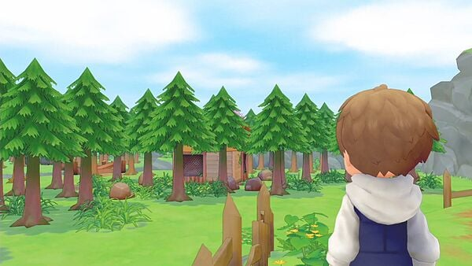
Cuando el jugador llega a la antigua granja de su abuelo, se encuentra con un enorme bosque que ha crecido demasiado en la propiedad. En Story of Seasons: Pioneers of Olive Town , depende del jugador recuperar la tierra y someterla a su voluntad. El jugador encontrara instalaciones dañadas y algunas instalaciones menores que encontraras en la granja. ¡A lo largo del camino, la granja se expandirá y pasará por mejoras!.
Casa
En Pioneers of Olive Town , comenzarás desde cero. ¡Literalmente! El jugador comienza con una tienda de campaña sencilla y una fogata, y puede mejorar su morada con los materiales adecuados. La tienda viene con una cuna desplegable, radio, algunos libros y un calendario.
| Nombre | Materiales requeridos | Costo |
|---|---|---|
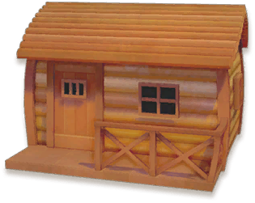 Cabaña de madera |
 20 Tronco |
2.000 G |
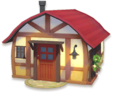 Casa pequeña |
 30 Madera  30 Maderarobusta  30 Lingotede hierro  30 Lingotede plata |
30.000 G |
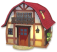 Casa Grande |
 60 Maderaflexible  60 Maderarecia 40 Lingotede plata  40 Lingotede oro |
100.000 G |
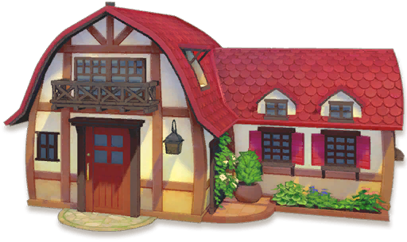 Hermosa casa |
120 Maderarecia  60 Maderaquimera 80 Lingotede oro  20 Lingotede oricalco |
1.000.000 G |
Edificios agrícolas
A medida que limpias el terreno, descubrirás diferentes instalaciones, incluidos graneros rotos y gallineros desgastados. Todas las instalaciones comienzan "en ruinas" cuando son descubiertas. ¡Con solo un poco de esfuerzo y mucha dedicación, puedes devolver estos edificios a su forma adecuada!. Las instalaciones agrícolas restauradas se pueden mover por tu granja y puedes comprarle más a Nigel en su tienda. ¡Cada instalación restaurada cuenta para tu Progreso Pionero total, que se puede seguir desde la subsección Registros del menú Estado en tu Cuaderno!
En estos edificios no son unicos, es decir que puedes tener más del mismo tipo de edificio construido en tu granja y tambien incluye a las verciones mejoradas de estos edificios.
| Nombre | Materiales requeridos | Capacidad animal |
|---|---|---|
Granero Normal |
10 Maderarobusta 10 Lingotede hierro  10 Hierbaflexible |
5 |
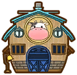 Granero Grande |
10 Maderaflexible 10 Lingotede oro  50 Hierbaresistente |
10 |
| Nombre | Materiales requeridos | Capacidad animal |
|---|---|---|
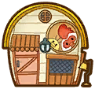 Gallinero Normal |
20 Tronco  20 Piedra  30 Hierba |
5 |
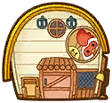 Gallinero Grande |
10 Maderarobusta 10 Lingotede plata 50 Hierbaflexible |
10 |
Establo
Los caballos no utilizan el establo y deben alojarse en un establo. Del mismo modo, el lobo montable se guarda en el establo cuando no se utiliza como transporte.
| Nombre | Materiales requeridos | Capacidad animal |
|---|---|---|
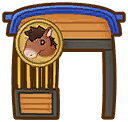 Establo |
50 Madera 40 Maderarobusta 30 Maderaflexible |
1 |
Silo
Es un edificio diseñado para guardar forraje pero para usarlo primero se debe repara el Silo que nesesita 20 ladrillos y 20 lingotes de plata. Colocar forraje en el silo para almacenarlo o utilizarlo con el comedero automático. El forraje colocado en el ensilaje se convertirá en forraje de lujo al día siguiente.
Tambien puedes mejorar el edificio, pero la vercion mejorada constara como otro edificio independiente, con esto tendra dos silos y podra guardar mas forraje. El silo normal solo tiene espacio para tener 40 forraje y el silo grande tiene espacio para tener 100 forraje.
| Nombre | Materiales requeridos | Capacidad de forraje |
|---|---|---|
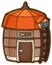 Silo Normal |
 20 Ladrillo 10 Lingotede plata |
10 |
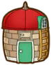 Silo Grande |
20 Ladrillo 5 Lingotede oro |
100 |
Planta de Hidrocultivo
La planta de hidrocultivo es uno de esos edificios de Ciudad Oliva que están en mal estado y que tenemos que reparar si los queremos utilizar. Desde el primer momento llamó mucho nuestra atención y nos preguntamos si realmente podría sernos de utilidad para nuestra partida.
Para poder repararlo vamos a necesitar cuatro objetos que son algo difíciles de conseguir, por lo vas a necesitar un poco de paciencia, pero no te preocupes. En este artículo te vamos a explicar paso a paso como puedes obtener todos los objetos y reparar la planta de hidrocultivo fácilmente.
| Nombre | Materiales requeridos |
|---|---|
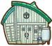 |
50 Maderaquimera 50 Lingotede oricalco  20 Bomba deextracción  10 Cristalde oliva |
Instalaciones menores
Las Instalaciones menores son instalaciones que se encuentran rondando por la granja y podras sacarle probecho obteniendo, una vez encontrada lo podras comprar en la tienda.
| Nombre | Materiales requeridos |
|---|---|
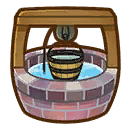 Pozo | — |
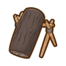 Tronco de setas |
 20 Troncosólido  30 Arcilla 40 Hierbaflexible |
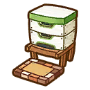 Colmena |
20 Maderarecia 50 Hierbaresistente |
Pozo
Una instalación agrícola que permite sacar agua. Si tu regadera se queda sin agua, puedes rellenarla usando el pozo.
Tronco de setas
Si plantas esporas en un tronco de hongos, ¡brotarán pequeños hongos! Después de unos días, sus esporas serán hongos cosechables y completamente desarrollados. Solo podras usar un tipo de esporas por Tronco de setas.
| Hongo |  Setashiitake |
Setashimeji |
 Setade cardo |
 Setade coral |
 Setacomún |
 Hongopino |
|---|---|---|---|---|---|---|
| Lugar | Area 2 de la granja | Area 3 de la granja | Valle Rompepiedras | Montaña del leñador | ||
Colmena
Es una edificaion diseñado para la produccion de miel. Puedes colocar una flor junto a una colmena y este a su vez atraerá a las abejas. Después de unos días, podrás cosechar las colmenas cubiertas de miel. Puedes encontrar un colmena dañada y para repararla nesesitaras 20 Madera recia y 50 Hierba resistente y una vez reparado puedes usarlo.
Dependiendo de la flor que utilises en la colmena podras obtener una colmeda de miel.
| Colmenas | Flores |
|---|---|
 Colmena de miel |
 Tulipán  Nemophila  Pensamiento  Hibisco  Petunia  Caléndula  Cineraria  Prímula |
 Colmena de miel en panal |
 Ranúnculo  Girasol  Clemátide  Begonia |
 Colmena de obreras |
 Pensamientonegro  Lirio  Margarita  Rosanegra  Campánula |
 Colmena real |
 Eléboro |
Una vez que tengas las colmenas de miel los puedes llevar a la Procesadora de miel para conseguir miel.
Atajos
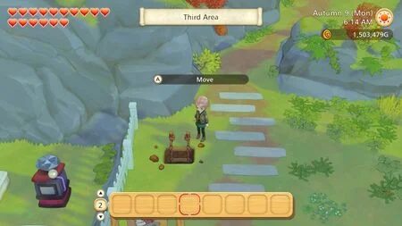
Después de completar todos los eventos de desarrollo de la ciudad (puede buscarlo en la seccion del Ayuntamiento), desbloquearas las misiones de los duendes de las cosechas, ademas si tu juego está actualizado a la versión 1.1.0 o superior dichas misiones se volveran un poco más difíciles y requierira que se completen todas las partes para cumplir plenamente los requisitos.
Después de cumplir con los requisitos y aver completado la mision 3 de los duendes de la cosecha, el jugador desbloqueara y obtendrás acceso a un túnel el cual une el Área 1 y el Área 3 de tu granja. El tunel facilita el viaje entre las dos zonas y estara situado arriba de la caja de envios de tu granja casi serca la la salida a la ciudad Oliva por lo que acceder a el sera rapido.